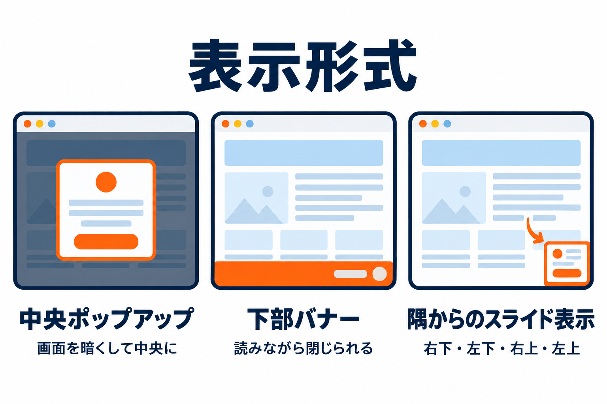
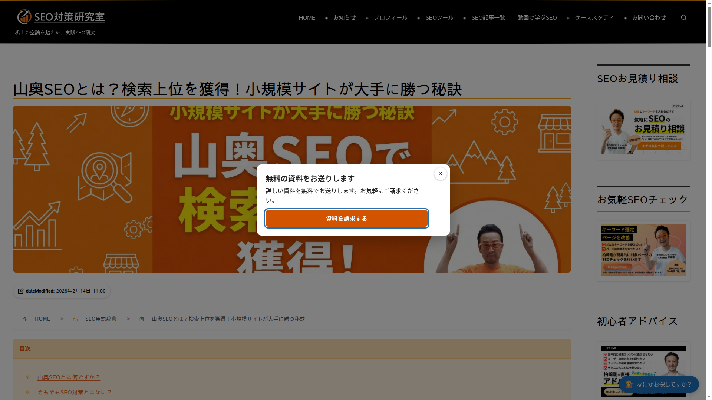
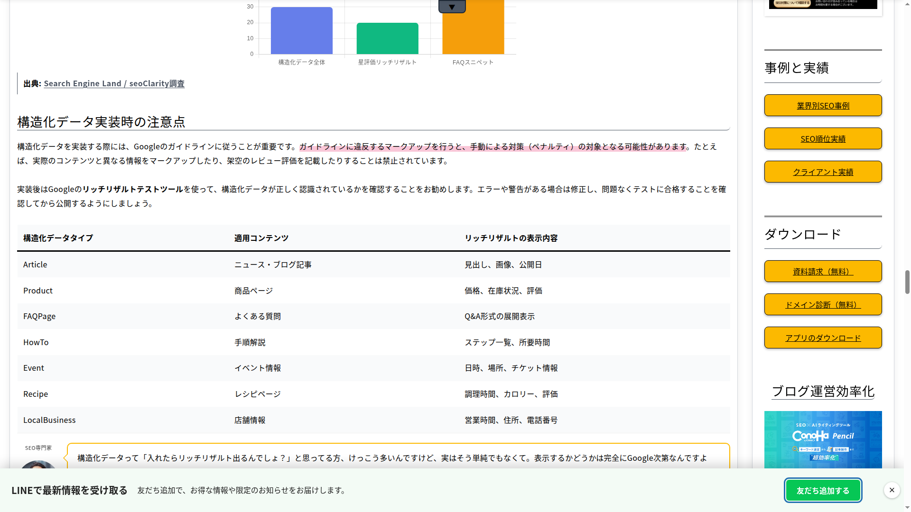
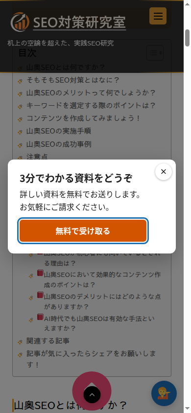

サイトでの表示
訪問者から見たバナーの表示のされ方と、閉じ方・キーボードでの操作を説明します。

中央ポップアップ
画面全体を暗くして、中央にバナーを表示します。バナーを閉じるまで、後ろのページは操作できません。

- 閉じ方: 右上の ×、キーボードの Esc、暗い背景のクリック。
- 表示されると、キーボードの操作の位置（フォーカス）がボタン（ボタンがなければ ×）に移ります。Tab キーで移動しても、バナーの外には出ません。閉じると、元の位置に戻ります。
- 暗さはデザインタブの「背景の暗さ」で変えられます。
下部バナー
画面のいちばん下に、横長の帯で表示します。ページはそのまま読んだり操作したりできます。

- 閉じ方: 右端の ×、キーボードの Esc。
- 幅の狭い画面では、中身を折り返して表示します。
隅からのスライド表示
画面の隅（右下・左下・右上・左上）に、小さなカードが横から滑り込むように表示します。ページはそのまま読んだり操作したりできます。
- 閉じ方: 右上の ×、キーボードの Esc。
- 幅は最大 380px です。
スマホでの表示

スマホでは、スマホ用の画像とスマホの幅が使われます。幅を空欄にした場合は、画面の幅に合わせて表示します。
どの形式にも共通すること
| 項目 | 内容 |
|---|---|
| 表示する数 | 1つのページで表示するバナーは1つだけです。一度表示したら、そのページではほかのバナーは表示しません。 |
| 閉じたとき | 「閉じた」として数え、「閉じたあと ○ 日は表示しない」の日数を数え始めます。 |
| ボタンを押したとき | 「クリック」として数え、リンク先を開きます（新しいタブで開く設定なら新しいタブで）。中クリックで新しいタブに開いた場合もクリックとして数えます。 |
| 読み上げ | 画面の読み上げソフトには、見出しを名前にしたダイアログとして伝わります（見出しがなければ「お知らせ」）。 |
| 動きを減らす設定 | 端末で「視差効果を減らす」「アニメーションを減らす」などを設定している人には、動きなしで表示します。 |